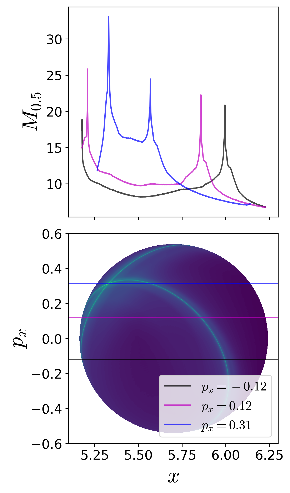
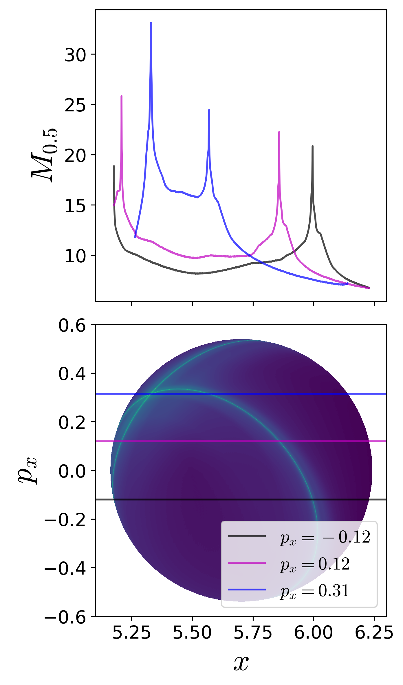
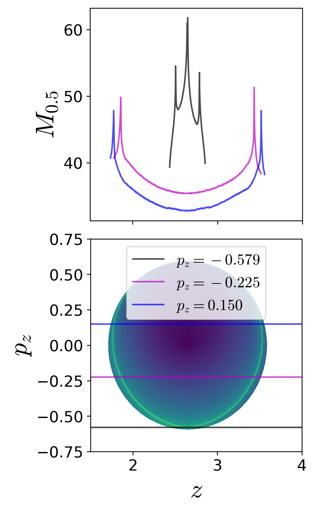
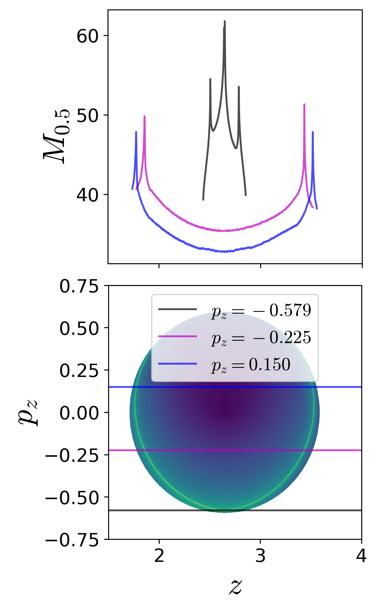

Abstract
We present the capability of Lagrangian descriptors for revealing the high dimensional phase space structures that are of interest in nonlinear Hamiltonian systems with index-1 saddle. These phase space structures include normally hyperbolic invariant manifolds (NHIM) and their stable and unstable manifolds, and act as codimenision-1 barriers to phase space transport. The method is applied to classical two and three degrees-of-freedom Hamiltonian systems which have implications for myriad applications in physics and chemistry.
It is well-known now that the paradigm of escape from a potential well and the topology of phase space structures that mediate such escape are used in a broad array of problems such as isomerization of molecular clusters [1], reaction rates in chemical physics [2,3], ionization of a hydrogen atom under electromagnetic field in atomic physics [4], transport of defects in solid state and semiconductor physics [5], buckling modes in structural mechanics [6,7], ship motion and capsize [8–10], escape and recapture of comets and asteroids in celestial mechanics [11–13], and escape into inflation or re-collapse to singularity in cosmology [14]. As such a method that can identify the high dimensional phase space structures using low dimensional surface as probes can aid in quantifying the escape rates. These low dimensional surfaces has been shown to be of as reactive islands in chemical physics and lead to insights into sampling rare transition events [15,16]. However, to benchmark the methodology, we first applied it to linear systems where the closed-form analytical expression of the phase space structures is known [17]. As the next step, in this article, we will focus on nonlinear Hamiltonian systems which have been extensively studied as “built by hand” models of galactic dynamics and for demonstrating quantum dynamical tunneling [18–27]. The nonlinear Hamiltonian systems considered here have an underlying Hénon-Heiles type potential with the simplest form of nonlinearity, and show regular, quasi-periodic, and chaotic trajectories along with bifurcations of periodic orbits. A Hénon-Heiles type potential has a well with bottlenecks connecting the region of bounded motion (trapped region) to unbounded motion (escape off to infinity), and have rotational symmetry. In addition, these Hénon-Heiles type potentials are studied as first benchmark nonlinear systems in applying new phase space transport methods to astrophysical and molecular motion. In this article, we will present verification of a method that uses trajectory diagnostic on a low dimensional surface for revealing the phase space structures in 4 or more dimensions.
Conservative dynamics on an open potential well has received considerable attention because the phase space structures, normally hyperbolic invariant manifolds (NHIM) and its invariant manifolds, explain the intricate fractal structure of ionization rates [28–30]. Furthermore, the discrepancies in observed and predicted ionization rates in atomic systems has also been explained by accounting for the topology of the phase space structures. These have been connected with the breakdown of ergodic assumption that is the basis for using ionization and dissociation rate formulae [31]. This rich literature on chaotic escape of electrons from atoms sets a precedent for applying new methods for finding NHIM and its invariant manifolds in Hamiltonian with open potential wells [30,32–35].
As we noted earlier, trajectory diagnostic methods which can probe phase space to detect the high dimensional invariant manifolds have potential to be of use in many degrees-of-freedom models. One such method is the Lagrangian descriptors (LDs) that can reveal phase space structures by encoding geometric property of trajectories (such as, phase space arc length, configuration space distance or displacement, cumulative action or kinetic energy) initialised on a two dimensional surface [36–39]. The method was originally developed in the context of Lagrangian transport in time-dependent two dimensional fluid mechanics. However, it has also been successful in locating transition state trajectory in chemical reactions [40–42]. Besides, also being applicable to both Hamiltonian and non-Hamiltonian systems, as well as to systems with arbitrary time-dependence such as stochastic and dissipative forces, and geophysical data from satellite and numerical simulations [39,43–46].
The method of Lagrangian descriptor (LD) is straightforward to implement computationally and it provides a “high resolution” method for exploring the influence of high dimensional phase space structure on trajectory behaviour. The method of LD takes an opposite approach to that of classical Lyapunov exponent type calculations by emphasizing the initial conditions of trajectories, rather than their advected locations that is involved in calculating normalized rate of divergence. This is achieved by considering a two dimensional section of the full phase space and discretizing with a dense grid of initial conditions. Even though the trajectories wander off in the phase space, as the initial conditions evolve in time, there is no loss in resolution of the two dimensional section. In contrast to inferring the phase space structures from Poincaré sections, LD plots do not suffer from loss of resolution since the affects of the structure are encoded in the initial conditions and there is no need for the trajectory to return to the section. Our objective is to clarify the use of Lagrangian descriptors as a diagnostic on two dimensional sections of high dimensional phase space structures. This diagnostic is also meant to be used as the preliminary step in computing the NHIM, their stable and unstable manifolds using other computational means [47–49]. In this article, we will present the method’s capability to detect the high dimensional phase space structures such as the NHIM, their stable, and unstable manifolds in 2 and 3 DoF Hamiltonian systems.
As pointed out in the Introduction, our focus is to adopt a well-understood model system which is a 2 degrees-of-freedom coupled harmonic oscillator with the Hamiltonian \[\begin{aligned} \mathcal{H}(x,y,p_x,p_y) =& T(p_x, p_y) + V_{\rm B}(x,y) \\ =& \frac{1}{2}p_x^2 + \frac{1}{2}p_y^2 + \frac{1}{2}\omega_x^2 x^2 + \frac{1}{2}\omega_y^2 y^2 + \delta x y^2 \end{aligned} \label{eqn:Hamiltonian_Barbanis}\] where \(\omega_x, \omega_y, \delta\) are the harmonic oscillation frequencies of the \(x\) and \(y\) degree-of-freedom, and the coupling strength, respectively. We will fix the parameters as \(\omega_x = 1.0, \omega_y = 1.1, \delta = -0.11\) in this study. The two degrees-of-freedom potential is also referred to as Barbanis potential, and has been investigated as a model of galactic motion ([18,50]), dynamical tunneling and molecular spectra in physical chemistry ([51–53]), structural mechanics and ship capsize ([9,10]).
The equilibria of the Hamiltonian vector field are located at \[\left(-\frac{\omega_y^2}{2\delta}, \pm \frac{1}{\sqrt{2}}\frac{\omega_x \omega_y}{\delta}, 0, 0 \right) \qquad \text{and} \qquad \left(0, 0, 0, 0 \right)\] and are at total energy \(E_c = \frac{\omega_x^2 \omega_y^4}{8 \delta^2}\) and \(0\) respectively. The energy of the two index-1 saddles (as defined and shown in App. 5.2.1) located at positive and negative y-coordinates and positive x-coordinate for \(\delta < 0\) will be referred to as critical energy, \(E_c\). In our discussion, we will refer to the total energy of a trajectory or initial condition in terms of the excess energy, \(\Delta E = E_c - e\), which can be negative or positive to denote energy below or above the critical energy. For the parameters used in this study, the index-1 saddle equilibrium points are located at \(\left( 5.5, \pm 7.071, 0, 0 \right)\) and have energy, \(E_c = 15.125\).
The contours of the coupled harmonic 2 DoF potential energy function in [eqn:Hamiltonian_Barbanis] is shown in Fig. [fig:pes_cont_Barbanis] along with the 3D view of the surface. We note here that the potential has steep walls for \(x < 0\) when \(\delta < 0\) and steep drop-off beyond the bottlenecks around the index-1 saddles. This leads to unphysical motion in the sense of trajectories approaching \(-\infty\) with ever increasing acceleration even for finite values of the configuration space coordinates [19].
In Fig. [fig:hills_region_Barbanis] we show the Hill’s region, as defined in App. 5, for the model system [eqn:Hamiltonian_Barbanis]. It is important to note here that even though Hill’s region is shown on the configuration space, it captures the dynamical picture, that is the phase space perspective, of the Hamiltonian. This visualization of the energetically accessible and forbidden realm is the first step towards introducing two-dimensional surfaces to explore trajectory behavior. The complete description of the unstable periodic orbit and its invariant manifolds is described in App. 5.1 along with the visualization in the 3D space.
Fig. 1. (a) Potential energy function underlying the coupled harmonic Hamiltonian~ as isopotential contour and surface. The index-1 saddles are shown as red crosses in both the plots. (b) Hill’s region for energy below and above the energy of the index-1 saddle. Parameters used are \(\omega_x = 1.0, \omega_y = 1.1, \delta = -0.11\).
Since this model system is conservative 2 DoF Hamiltonian, that is the phase space is \(\mathbb{R}^4\), the energy surface is three dimensional, the dividing surface is two dimensional, and the normally hyperbolic invariant manifold (NHIM), referred to as the unstable periodic orbit, is one dimensional [54]. Now, if we consider the intersection of a two dimensional surface with the three-dimensional energy surface, we would obtain the one-dimensional energy boundary on the surface of section. We will focus our study by using the isoenergetic two-dimensional surface
\[\begin{aligned} % U_{V, +} &= \left\{(y,p_y) \; | \; x = 0, \; p_x(y,p_y;e) > 0 \right\} , \qquad \text{motion %to the right} \label{eqn:sos_U_Vp} \\ % U_{V, -} &= \left\{(y,p_y) \; | \; x = 0, \; p_x(y,p_y;e) < 0 \right\} , \qquad \text{motion %to the left} \label{eqn:sos_U_Vm} \\ U_{xp_x, +} &= \left\{(x,y,p_x,p_y) \; | \; y = 0, \; p_y(x,y,p_x;e) > 0 \right\} \label{eqn:sos_Uxpx} % U_{H, -} &= \left\{(x,p_x) \; | \; y = 0, \; p_y(x,p_x;e) < 0 \right\} , \qquad \text{motion %to the bottom} \label{eqn:sos_U_Hm} \end{aligned}\]
where the sign of the momentum coordinate enforces a directional crossing of the surface. Due to the form of the vector field [eqn:two_dof_Barbanis] and choice of \(\delta < 0\), this directionality condition implies motion towards positive \(y\)-coordinate.
In this article, detecting the phase space structures will constitute finding the intersection of the NHIM and its invariant manifolds with a two dimensional surface (for example, Eqn. [eqn:sos_Uxpx]).
The next higher dimensional model system to consider is the coupled harmonic potential in 3 dimensions and underlying a 3 degrees-of-freedom system in [55,56]. The Hamiltonian is given by
\[\begin{split} \mathcal{H}(x,y,z,p_x,p_y,p_z) = T(p_x, p_y, p_z) + V_{\rm BC}(x,y,z) = \frac{1}{2}p_x^2 + \frac{1}{2}p_y^2 + \frac{1}{2}p_z^2 + \frac{1}{2}\omega_x^2 x^2 + \frac{1}{2}\omega_y^2 y^2 + \frac{1}{2}\omega_z^2 z^2 - \epsilon x^2y - \eta x^2 z \label{eqn:Hamiltonian_BC_3dof} \end{split}\]
where \(\omega_x^2, \omega_y^2, \omega_z^2, \epsilon, \eta\) are the parameters related to the coupled harmonic 3 dimensional potential energy function [56]. In this study, we will fix the parameters to be \(\omega_x^2 = 0.9, \omega_y^2 = 1.6, \omega_z^2 = 0.4, \epsilon = 0.08, \eta = 0.01\). The two index-1 saddle equilibria (as shown in the App. 6) of the Hamiltonian vector field [eqn:three_dof_Barbanis] are located at
\[\begin{equation} \left(\pm \frac{\omega_x\omega_y\omega_z}{\sqrt{2(\epsilon^2\omega_z^2 + \eta^2\omega_y^2)}}, \frac{\epsilon \omega_x^2\omega_z^2}{2(\epsilon^2\omega_z^2 + \eta^2\omega_y^2)}, \frac{\eta \omega_x^2\omega_y^2}{2(\epsilon^2\omega_z^2 + \eta^2\omega_y^2)}, 0, 0, 0 \right) \label{eqn:eq_pt_BC_3dof} \end{equation}\]
and the total energy is \[E_c = \frac{1}{8} \omega_x^2 \frac{\omega_x^2 \omega_y^2 \omega_z^2}{ \left( \epsilon^2 \omega_z^2 + \eta^2 \omega_y^2 \right)}.\] The equilibrium point at \((0,0,0,0,0,0)\) is stable and has total energy \(0\). For the parameters used in this study, the equilibrium points are located at \(\left( \pm 10.290, 5.294, 2.647, 0, 0, 0 \right)\) and \(\left( 0, 0, 0, 0, 0, 0 \right)\) and have total energy, \(E_c \approx 23.824\) and \(E = 0\), respectively.
We show the isopotential contours of the potential energy function at fixed value of \(z_{\rm eq}\) in Fig. [fig:Barbanis_Contopoulos_3dof] along with the Hill’s regions for positive excess energy, \(\Delta E = 6.000\) and projected on the configuration space coordinates at the equilibrium point.
 [fig:Barbanis_Contopoulos_3dof]
[fig:Barbanis_Contopoulos_3dof]
Fig. 2. (a) Potential energy function underlying the coupled harmonic Hamiltonian~ at \(z_{\rm eq} = 2.647\) as isopotential contour and surface. (b) Hill’s region for excess energy, \(\Delta E = 6.000\) and projected on the configuration space coordinates at the equilibrium point. We note here that the potential energy surface and the Hill’s region is plotted by fixing one of the configuration coordinates at the equilibrium point.
Since this model system is conservative 3 DoF Hamiltonian, that is the phase space is \(\mathbb{R}^6\), the energy surface is five dimensional, the dividing surface is four dimensional, and the normally hyperbolic invariant manifold (NHIM) is three dimensional, or precisely 3-sphere, and its invariant manifolds are four dimensional, or precisely \(\mathbb{R}^1 \times \mathbb{S}^3\) or spherical cylinders [54]. Now, if we consider the intersection of a two-dimensional section with the five dimensional energy surface in \(\mathbb{R}^6\), we would obtain the one-dimensional energy boundary on the surface. We will focus our study near the bottleneck by considering the isoenergetic two dimensional surfaces
\[\begin{aligned} U_{xp_x}^+ = & \left\{ (x, y, z, p_x, p_y, p_z) \; | \; y = y_{\rm eq}, z = z_{\rm eq}, \; p_y = 0, \; p_z(x, y, z, p_x, p_y; e) > 0 \right\} \label{eqn:Barbanis3dof_uxpx}\\ U_{yp_y}^+ = & \left\{ (x, y, z, p_x, p_y, p_z) \; | \; x = x_{\rm eq}, z = z_{\rm eq}, \; p_x = 0, \; p_z(x, y, z, p_x, p_y; e) > 0 \right\} \label{eqn:Barbanis3dof_uypy}\\ U_{zp_z}^+ = & \left\{ (x, y, z, p_x, p_y, p_z) \; | \; x = x_{\rm eq}, y = y_{\rm eq}, \; p_x = 0, \; p_y(x, y, z, p_x, p_z; e) > 0 \right\} \label{eqn:Barbanis3dof_uzpz} % \label{eqn:Barbanis3dof_sos_near_saddle} \end{aligned}\]
In this 3 DoF system, detecting points on the three dimensional NHIM and four dimensional invariant manifolds will constitute finding their intersection with the above two dimensional surfaces.
The Lagrangian descriptor (LD) as presented in Ref.[36] is the arc length of a trajectory calculated on a chosen initial time \(t_0\) and measured for fixed forward and backward integration time, \(\tau\). For continuous time dynamical systems, Ref.[39] gives an alternative definition of the LD which is useful for proving rigorous results and can be computed along with the trajectory. It provides a characterization of the notion of singular features of the LD that facilitates a proof for detecting invariant manifolds in certain model situations. In addition, the “additive nature” of this new definition of LD provides an approach for assessing the influence of each degree-of-freedom separately. This property was used in Ref.[57] to show that Lagrangian descriptor can detect Lyapunov periodic orbits in the two degrees-of-freedom Hénon-Heiles system. We will adopt a similar strategy for the aforementioned two and three degrees-of-freedom autonomous Hénon-Heiles type systems.
In the general setting of a time-dependent vector field \[\frac{d\mathbf{x}}{dt} = \mathbf{v}(\mathbf{x},t), \quad \mathbf{x} \in \mathbb{R}^n \;,\; t \in \mathbb{R}\] where \(\mathbf{v}(\mathbf{x},t) \in C^r\) (\(r \geq 1\)) in \(\mathbf{x}\) and continuous in time. The definition of LDs depends on the initial condition \(\mathbf{x}_{0} = \mathbf{x}(t_0)\), on the initial time \(t_0\) (trivial for autonomous systems) and the integration time \(\tau\), and the type of norm of the trajectory’s components, and takes the form,
\[M_p(\mathbf{x}_{0},t_0,\tau) = \displaystyle{\int^{t_0+\tau}_{t_0-\tau} \sum_{i=1}^{n} |\dot{x}_{i}(t;\mathbf{x}_{0})|^p \; dt} \label{eqn:M_function}\]
where \(p \in (0,1]\) and \(\tau \in \mathbb{R}^{+}\) are freely chosen parameters, and the overdot symbol represents the derivative with respect to time. It is to be noted here that there are three formulations of the function \(M_p\) in the literature: the arc length of a trajectory in phase space [36], the arc length of a trajectory projected on the configuration space [47,58–60], and the sum of the \(p\)-norm of the vector field components [39,61]. Although the latter formulation of the Lagrangian descriptor [eqn:M_function] developed in Ref. [39,61] does not resemble the arc length, the numerical results using either of these forms have been shown to be in agreement and promise of predictive capability in geophysical flows [43–46]. The formulation we adopt here is motivated by the fact that this allows for proving rigorous result, which we will discuss in the next section, connecting the singular features and minimum in the LD plots with NHIM and its stable and unstable manifolds. It follows from the result that
\[\begin{aligned} \mathcal{W}^s(\mathbf{x}_0, t_0) & = \text{\rm argmin} \; \mathcal{L}^{(f)}(\mathbf{x}_0, t_0, \tau) \\ \mathcal{W}^u(\mathbf{x}_0, t_0) & = \text{\rm argmin} \; \mathcal{L}^{(b)}(\mathbf{x}_0, t_0, \tau) \end{aligned}\]
where the stable and unstable manifolds (\(\mathcal{W}^s(\mathbf{x}_0, t_0)\) and \(\mathcal{W}^u(\mathbf{x}_0, t_0)\)) denote the invariant manifolds at intial time \(t_0\) and \(\text{\rm argmin} \; (\cdot)\) denotes the argument that minimizes the function \(\mathcal{L}^{(\cdot)}(\mathbf{x}_0, t_0, \tau)\) in forward and backward time, respectively. In addition, the coordinates on the NHIM, \(\mathcal{M}(\mathbf{x}_0, t_0)\) at time \(t_0\) is given by the intersection \(\mathcal{W}^s(\mathbf{x}_0, t_0)\) and \(\mathcal{W}^u(\mathbf{x}_0, t_0)\) of the stable and unstable manifolds, and thus given by
\[\begin{aligned} \mathcal{M}(\mathbf{x}_0, t_0) & = \text{\rm argmin} \; \left( \mathcal{L}^{(f)}(\mathbf{x}_0, t_0, \tau) + \mathcal{L}^{(b)}(\mathbf{x}_0, t_0, \tau) \right) \\ & = \text{\rm argmin} \; \mathcal{L}(\mathbf{x}_0, t_0, \tau) \end{aligned}\]
In applying the LD method to nonlinear systems, one observes multiple minima and singularities that can lead to trouble with isolating the one minima due to the NHIM and the ones due to its invariant manifolds. Since, as we integrate initial conditions on an isoenergetic two dimensional surface such as \(U_{xp_x}^+\) [eqn:sos_Uxpx], almost all trajectories that escape to infinity get integrated for the entire time interval and result in numerical overflow of the function M value [eqn:M_function] and show up as NaN. This can, however, be avoided by integrating for shorter time interval but this will vary for different locations of a surface. Thus, leading to trouble in locating the point with minimum and singularity in LD contour map that correspond to NHIM and its invariant manifolds.
This computational issue has been addressed in recent efforts to locate transition state trajectory in driven and 3 degrees-of-freedom chemical reaction dynamics [41,62,63]. It has been noted that computing fixed integration time Lagrangian descriptor (LD) leads to two potential issues:
1. Bounded trajectories will show global recrossings of the barrier as predicted by Poincaré recurrrence theorem. The recrossings will show multiple minima and singularities (as in Fig. [fig:psect_lag_desc_Barbanis](d-f)) in the LD plot which obscures locating the actual NHIM.
2. The trajectories that escape the potential well will leave with ever increasing acceleration, if the potential energy surface opens out to infinity. The trajectories with NaN LD values will render the contour map flat which again obscures locating the NHIM.
To circumvent these issues, a heuristic that has been adopted in the literature is to calculate LD values only until a trajectory remains inside the barrier region. The immediate result is the initial condition on an invariant manifold will have a maxima in the LD values because of being integrated for the full integration time (preselected) interval.
Thus, the formulation [eqn:M_function] is modified as
\[M_p(\mathbf{x}_{0},t_0,\tau^{\pm}) = \displaystyle{\int^{t_0+\tau^+}_{t_0-\tau^-} \sum_{i=1}^{n} |\dot{x}_{i}(t;\mathbf{x}_{0})|^p \; dt} \label{eqn:M_function_var}\]
where the integration time interval depends on a trajectory and given by
\[\tau^{\pm}(\mathbf{x}_0) = \min\left(\tau, t\vert_{|\mathbf{x}(t)| > q_s} \right) \label{eqn:var_time_qs}\]
where \(q_s\) defines a domain, called the saddle region, in the configuration space around the saddle. We note here that the only initial condition that gets integrated for the entrire \(\tau\) time units in forward and backward time is the one on the NHIM. In addition, the coordinates on the NHIM, \(\mathcal{M}(\mathbf{x}_0, t_0)\), at time \(t_0\) is given by \[\begin{aligned} \mathcal{M}(\mathbf{x}_0, t_0) & = \text{\rm argmax} \; \left( \mathcal{L}^{(f)}(\mathbf{x}_0, t_0, \tau) + \mathcal{L}^{(b)}(\mathbf{x}_0, t_0, \tau) \right) \\ & = \text{\rm argmax} \; \mathcal{L}(\mathbf{x}_0, t_0, \tau) \end{aligned}\] This is also a familiar from a dynamical systems perspective where the literature on average exit times to locate invariant sets has been discussed for the symplectic maps (see [64] and related references). However, the connection between features in exit times and LD contour maps is not the focus of this study and will be deferred as related future work.
We begin by noting that two-dimensional Poincaré surface of section have sufficient dimensionality to capture trajectories on a three dimensional energy surface, however for high dimensional systems trajectories can go “around” the two dimensional surface. One approach available in the literature is to use high dimensional Poincaré sections which can “catch” trajectories but are hard to visualize on paper or in the virtual 3D space. Even when gets around this issue, using suitable projective geometry, the fact that the qualitative analysis based on Poincaré sections depends on trajectories returning to this surface can not be circumvented since trajectories on and inside the spherical cylinders will not return to the Poincaré surface of section.

Fig. 3. Top row: Poincar'e surface of section, \(U_{xp_x}\)~, at excess energy (a) \(\Delta E = -0.125\), (b) \(\Delta E = 0.000\), (c) \(\Delta E = 0.125\) where the intersection of the surface of section with the energy surface is shown in green. Bottom row: Lagrangian descriptor on the surface of section, \(U_{xp_x}\)~, for the excess energies (d) \(\Delta E = -0.125\), (e) \(\Delta E = 0.000\), (f) \(\Delta E = 0.125\) and the integration time \(\tau = 50\). The intersection of the surface of section with the cylindrical manifolds of the NHIM unstable periodic orbit for this system associated with the index-1 saddle equilibrium point in the bottleneck is shown in cyan (stable) and magenta (unstable) curves. The magenta and cyan curves in \(p_x > 0\) correspond to the invariant manifolds of unstable periodic orbit at \(y > 0\) index-1 saddle, and the ones in \(p_x < 0\) correspnd to the invariant manifolds of unstable periodic orbit at \(y < 0\) index-1 saddle.
As discussed in aforementioned literature [36,39,57], points with minimum Lagrangian descriptor (LD) values and singularity are on the invariant manifolds. In addition, LD plots show dynamical correspondence with Poincaré sections (in the sense that regions with regular and chaotic dynamics are distinct in both Poincaré section and LD plots) while also depicting the geometry of manifold intersections [39,57,65]. This correspondence in the LD features and Poincaré section is confirmed in Fig. [fig:psect_lag_desc_Barbanis] where we show the Poincaré surface of section Eqn. [eqn:sos_Uxpx] of trajectories and LD contour maps on the same isoenergetic two-dimensional surface for negative and positive excess energies. It can be seen that the chaotic dynamics as marked by the sea of points in Poincaré section is revealed as the tangle of invariant manifolds which are points of minima and singularity in the LD plots. As shown by the one dimensional slices of the LD plots, there are multiple such minima and singularities and as the excess energy is increased to positive values, there are regions of discontinuities along the one dimensional slice. Next, as the energy is increased and the bottleneck opens at critical energy \(E_c\), trajectories that leave the potential well and do not return to the surface of section are not observed on the Poincaré section while the LD contour maps clearly identifies these regions as discontinuities in the LD values. These regions lead to escape because they are inside the cylindrical manifolds of the unstable periodic orbit associated with the index-1 saddle equilibrium point [10]. These regions on the isoenergetic two-dimensional surface are also referred to as reactive islands in chemical reaction dynamics [66–68]. The escape regions or reactive islands that appear over the integration time interval can also be identified by using the forward and backward LD contour maps where these regions appear as discontinuities. In Fig. [fig:psect_lag_desc_Barbanis](f), we show these for \(\Delta E = 0.125\) and \(\tau = 50\) along with the intersection of the cylindrical manifolds’ intersections that are computed using differential correction and numerical continuation. The detailed comparison and extension to high dimensional systems is not the focus of this study and will be discussed in forthcoming work. Thus LD maps also provide a quick and reliable approach for detecting regions that will lead to escape within the observed time, or in the computational context, the integration time.
To detect the NHIM in this case, unstable periodic orbit associated with the index-1 saddles (marked by cross in Fig. [fig:pes_cont_Barbanis]), we define an isoenergetic two dimensional surface that is parametrized by the \(y\)-coordinate and placed near the \(x\)-coordinate of the saddle equilibrium that has the negative \(y\)-coordinate. This can be expressed as a parametric two dimensional surface
\[\begin{aligned} % U_{xy}^+ = & \left\{(x,y,p_x,p_y) \; | \; p_x = 0, \; p_y(x,y;e) > 0 \right\}, \\ U_{xp_x}^+(k) = & \left\{(x,y,p_x,p_y) \, | \, y = k, p_y(x,y,p_x;e) > 0 \right\} \label{eqn:sos_xpx_k} % U_{yp_y}^+ = & \left\{(x,y,p_x,p_y) \; | \; x = k_x, \; p_y(x,y,p_x;e) > 0 \right\}, \end{aligned}\]
for total energy, \(e\), which is above the critical energy, \(E_c\), \(k\) is the \(y\)-coordinate. The variable integration time LD contour maps are shown in Fig. [fig:Barbanis2dof_M1500x1500_E15-250] along with the projection of the low dimensional slices [eqn:sos_xpx_k] in the configuration space and the NHIM. The points on NHIM, which is an unstable periodic orbit for 2 DoF, on this surface is the coordinate with maximum (for variable integration time) LD value. The full visualization of the NHIM as the black ellipse, \(\mathbb{S}^1\), is in Fig. [fig:Barbanis2dof_M1500x1500_E15-250](d) and has been computed using differential correction and numerical continuation (details in App. 5.1) and shows clearly that points on this unstable periodic orbit are detected by the LD contour map.

 
 
Fig. 4. Lagrangian descriptor computed for variable integration time on two dimensional slices~ near the bottleneck that detect the NHIM and its invariant manifolds associated with the index-1 saddle. The two dimensional surfaces are shown in the top figure in (d) projected as orange lines on the configuration space and the unstable periodic orbit as black line connecting the isopotential contour corresponding to \(\Delta E = 0.125\) with the Hill’s region shown in grey. The two dimensional slices represent low dimensional probe of the unstable periodic orbit and the movie of a rotating view can be found here.
The Lagrangian descriptor based approach for detecting NHIM in 2 DoF system can now be applied to the 3 DoF system [eqn:Hamiltonian_BC_3dof]. On the five dimensional energy surface, the phase space structures such as the NHIM and its invariant manifolds are three and four dimensional, respectively [54]. As noted earlier, direct visualization techniques will fall short in 4 or more DoF systems even if they are successful in 2 and 3 DoF. So, LD based approach can be used to detect points on a NHIM and its invariant manifolds using low dimensional probe which are based on trajectory diagnostic on an isoenergetic two dimensional surface.
It is to be noted that the increase in phase space dimension, leads to a polynomial scaling in the number of coordinate pairs (that is \(2N(2N-1)(N-1)\) coordinate pairs for \(N\) DoF system) and is thus, impractical to present the procedure on all the combination of coordinates. We will present the results for the three configuration space coordinates by combining each with its corresponding momentum coordinate.
On these isoenergetic surfaces, we compute the variable integration time Lagrangian descriptor for small excess energy, \(\Delta E \approx 0.176\), or total energy \(E = 24.000\), and show the contour maps in Fig. [fig:Barbanis3dof_M_pxpypz]. The maxima identifying the points on the NHIM and its invariant manifolds can be visualized using one dimensional slices for constant momenta. This indicates clearly the initial conditions in the phase space (points on the isoenergetic two dimensional surfaces in \(\mathbb{R}^6\), for example [eqn:Barbanis3dof_uxpx]) that do not leave the saddle region.

  Fig. 5. Detecting points on the NHIM using variable integration time Lagrangian descriptor on the two dimensional surfaces (a) \(U_{xp_x}^+\)~, (b) \(U_{yp_y}^+\)~, and (c) \(U_{zp_z}^+\)~ at excess energy \(\Delta E \approx 0.176\) or total energy \(E = 24.000\). For this energy value, the saddle region, as defined in Eqn.~, is taken to be \(q_s = [9,12] \times [2.5,7.5] \times [1,4]\) and \(\tau = 50\).
 Fig. 5. Detecting points on the NHIM using variable integration time Lagrangian descriptor on the two dimensional surfaces (a) \(U_{xp_x}^+\)~, (b) \(U_{yp_y}^+\)~, and (c) \(U_{zp_z}^+\)~ at excess energy \(\Delta E \approx 0.176\) or total energy \(E = 24.000\). For this energy value, the saddle region, as defined in Eqn.~, is taken to be \(q_s = [9,12] \times [2.5,7.5] \times [1,4]\) and \(\tau = 50\).
In this article, we discussed a trajectory diagnostic method as a low dimensional probe of high dimensional invariant manifolds in 2 and 3 DoF nonlinear Hamiltonian systems. This trajectory diagnostic — Lagrangian descriptor (LD) — can represent a geometric property of interest in a system with escape/transition and features, that is minima or maxima, in its contour map identify points on the high dimensional invariant manifolds.
Comparing the points on the NHIM in 2 DoF system obtained using the LD method with differential correction and numerical continuation, we also verified the method for a nonlinear autonomous system following our previous work on decoupled and coupled 2 and 3 DoF linear system [17]. The results on 3 DoF system are also congruent with what one expects for an extended problem of the 2 DoF coupled harmonic potential. In addition, the LD method based detection of NHIM is simple to implement and quickly provides a lay of the dynamical land which is a preliminirary step in applying phase space transport to problems in physics and chemistry. This method can also be used to set up starting guess for other numerical procedures which rely on good initial guess or can also be used in conjunction with machine learning methods for rendering the smooth pieces of NHIM [48,69].
We acknowledge the support of EPSRC Grant No. EP/P021123/1 and ONR Grant No. N00014-01-1-0769. We would like to thank Dmitry Zhdanov for stimulating discussions.
[1] T. Komatsuzaki, R.S. Berry, P. Natl. Acad. Sci. USA 98 (2001) 7666–7671.
[2] T. Komatsuzaki, R.S. Berry, The Journal of Chemical Physics 110 (1999) 9160–9173.
[3] S. Wiggins, L. Wiesenfeld, C. Jaffé, T. Uzer, Phys. Rev. Lett. 86 (2001) 5478–5481.
[4] C. Jaffé, D. Farrelly, T. Uzer, Phys. Rev. Lett. 84 (2000) 610–613.
[5] B. Eckhardt, J. Phys. A-Math. Gen. 28 (1995) 3469.
[6] P. Collins, G.S. Ezra, S. Wiggins, Phys. Rev. E 86 (2012) 056218.
[7] J. Zhong, L.N. Virgin, S.D. Ross, Int. J. Mech. Sci. 000 (2018) 1–16.
[8] L.N. Virgin, Dynamics and Stability of Systems 4 (1989) 56–70.
[9] J.M.T. Thompson, J.R. de Souza, Proc. R. Soc. Lond. A 452 (1996) 2527–2550.
[10] S. Naik, S.D. Ross, Commun. Nonlinear Sci. 47 (2017) 48–70.
[11] C. Jaffé, S.D. Ross, M.W. Lo, J.E. Marsden, D. Farrelly, T. Uzer, Physical Review Letters 89 (2002) 011101.
[12] M. Dellnitz, O. Junge, M.W. Lo, J.E. Marsden, K. Padberg, R. Preis, S.D. Ross, B. Thiere, Physical Review Letters 94 (2005) 231102.
[13] S.D. Ross, in: G. Gómez, M.W. Lo, J.J. Masdemont (Eds.), Libration Point Orbits and Applications, World Scientific, 2003, pp. 637–652.
[14] H.P. de Oliveira, A.M. Ozorio de Almeida, I. Damião Soares, E.V. Tonini, Phys. Rev. D 65 (2002) 9.
[15] S. Patra, S. Keshavamurthy, Chemical Physics Letters 634 (2015) 1–10.
[16] S. Patra, S. Keshavamurthy, Physical Chemistry Chemical Physics 20 (2018) 4970–4981.
[17] S. Naik, V.J. García-Garrido, S. Wiggins, arXiv Preprint arXiv:1903.10264 (2019).
[18] B. Barbanis, The Astronomical Journal 71 (1966) 415.
[19] P. Brumer, J.W. Duff, The Journal of Chemical Physics 65 (1976) 3566–3574.
[20] M.J. Davis, E.J. Heller, The Journal of Chemical Physics 71 (1979) 3383–3395.
[21] E.J. Heller, E.B. Stechel, M.J. Davis, The Journal of Chemical Physics 73 (1980) 4720–4735.
[22] B.A. Waite, W.H. Miller, The Journal of Chemical Physics 74 (1981) 3910–3915.
[23] R. Kosloff, S.A. Rice, The Journal of Chemical Physics 74 (1981) 1947–1955.
[24] G. Contopoulos, P. Magnenat, Celestial Mechanics 37 (1985) 387–414.
[25] M. Founargiotakis, S.C. Farantos, G. Contopoulos, C. Polymilis, The Journal of Chemical Physics 91 (1989) 1389–1402.
[26] B. Barbanis, Celestial Mechanics and Dynamical Astronomy 48 (1990) 57–77.
[27] D. Babyuk, R.E. Wyatt, J.H. Frederick, The Journal of Chemical Physics 119 (2003) 6482–6488.
[28] K.A. Mitchell, J.P. Handley, B. Tighe, J.B. Delos, S.K. Knudson, Chaos: An Interdisciplinary Journal of Nonlinear Science 13 (2003) 880–891.
[29] K.A. Mitchell, J.P. Handley, J.B. Delos, S.K. Knudson, Chaos: An Interdisciplinary Journal of Nonlinear Science 13 (2003) 892–902.
[30] K.A. Mitchell, J.P. Handley, B. Tighe, A. Flower, J.B. Delos, Physical Review Letters 92 (2004).
[31] N. De Leon, B.J. Berne, The Journal of Chemical Physics 75 (1981) 3495–3510.
[32] K.A. Mitchell, J.P. Handley, B. Tighe, A. Flower, J.B. Delos, Physical Review A 70 (2004).
[33] K.A. Mitchell, B. Ilan, Physical Review A 80 (2009).
[34] K.A. Mitchell, J.B. Delos, Physica D: Nonlinear Phenomena 229 (2007) 9–21.
[35] L. Wang, H.F. Yang, X.J. Liu, H.P. Liu, M.S. Zhan, J.B. Delos, Physical Review A 82 (2010).
[36] J.A.J. Madrid, A.M. Mancho, Chaos 19 (2009) 013111.
[37] C. Mendoza, A.M. Mancho, Phys. Rev. Lett. 105 (2010) 038501.
[38] A.M. Mancho, S. Wiggins, J. Curbelo, C. Mendoza, Communications in Nonlinear Science and Numerical 18 (2013) 3530–3557.
[39] C. Lopesino, F. Balibrea-Iniesta, V.J. García-Garrido, S. Wiggins, A.M. Mancho, International Journal of Bifurcation and Chaos 27 (2017) 1730001.
[40] F. Balibrea-Iniesta, C. Lopesino, S. Wiggins, A.M. Mancho, International Journal of Bifurcation and Chaos 26 (2016) 1630036.
[41] G.T. Craven, A. Junginger, R. Hernandez, Physical Review E 96 (2017) 022222.
[42] A. Junginger, R. Hernandez, Physical Chemistry Chemical Physics 18 (2016) 30282–30287.
[43] A. de la Cámara, A.M. Mancho, K. Ide, E. Serrano, C. Mechoso, J. Atmos. Sci. 69 (2012) 753–767.
[44] C. Mendoza, A.M. Mancho, S. Wiggins, Nonlinear Processes in Geophysics 21 (2014) 677–689.
[45] V.J. García-Garrido, A.M. Mancho, S. Wiggins, Nonlin. Proc. Geophys. 22 (2015) 701–712.
[46] A.G. Ramos, V.J. García-Garrido, A.M. Mancho, S. Wiggins, J. Coca, S. Glenn, O. Schofield, J. Kohut, D. Aragon, J. Kerfoot, T. Haskins, T. Miles, C. Haldeman, N. Strandskov, B. Allsup, C. Jones, J. Shapiro., Scientfic Reports 4 (2018) 4575.
[47] A. Junginger, G.T. Craven, T. Bartsch, F. Revuelta, F. Borondo, R. Benito, R. Hernandez, Physical Chemistry Chemical Physics 18 (2016) 30270–30281.
[48] R. Bardakcioglu, A. Junginger, M. Feldmaier, J. Main, R. Hernandez, Physical Review E 98 (2018).
[49] G.S. Ezra, S. Wiggins, The Journal of Physical Chemistry A 122 (2018) 8354–8362.
[50] G. Contopoulos, The Astronomical Journal 75 (1970) 96.
[51] E.J. Heller, E.B. Stechel, M.J. Davis, The Journal of Chemical Physics 73 (1980) 4720–4735.
[52] M.J. Davis, E.J. Heller, The Journal of Chemical Physics 75 (1981) 246–254.
[53] C.C. Martens, G.S. Ezra, The Journal of Chemical Physics 86 (1987) 279–307.
[54] S. Wiggins, Regular and Chaotic Dynamics 21 (2016) 621–638.
[55] G. Contopoulos, S.C. Farantos, H. Papadaki, C. Polymilis, Physical Review E 50 (1994) 4399–4403.
[56] S.C. Farantos, Computer Physics Communications 108 (1998) 240–258.
[57] A.S. Demian, S. Wiggins, International Journal of Bifurcation and Chaos 27 (2017) 1750225.
[58] A. Junginger, R. Hernandez, The Journal of Physical Chemistry B 120 (2016) 1720–1725.
[59] A. Junginger, L. Duvenbeck, M. Feldmaier, J. Main, G. Wunner, R. Hernandez, The Journal of Chemical Physics 147 (2017) 064101.
[60] A. Junginger, J. Main, G. Wunner, R. Hernandez, Physical Review A 95 (2017).
[61] C. Lopesino, F. Balibrea, S. Wiggins, A.M. Mancho, Communications in Nonlinear Science and Numerical Simulation 27 (2015) 40–51.
[62] G.T. Craven, R. Hernandez, Physical Chemistry Chemical Physics 18 (2016) 4008–4018.
[63] G.T. Craven, R. Hernandez, Physical Review Letters 115 (2015) 148301.
[64] J.D. Meiss, Chaos: An Interdisciplinary Journal of Nonlinear Science 7 (1997) 139–147.
[65] V.J. García-Garrido, J. Curbelo, A.M. Mancho, S. Wiggins, C.R. Mechoso, Regular and Chaotic Dynamics 23 (2018) 551–568.
[66] N. De Leon, J. Chem. Phys. 96 (1992) 285–297.
[67] N. De Leon, M.A. Mehta, R.Q. Topper, J. Chem. Phys. 94 (1991) 8310–8328.
[68] N. De Leon, M.A. Mehta, R.Q. Topper, J. Chem. Phys. 94 (1991) 8329–8341.
[69] M. Feldmaier, P. Schraft, R. Bardakcioglu, J. Reiff, M. Lober, M. Tschöpe, A. Junginger, J. Main, T. Bartsch, R. Hernandez, The Journal of Physical Chemistry B 123 (2019) 2070–2086.